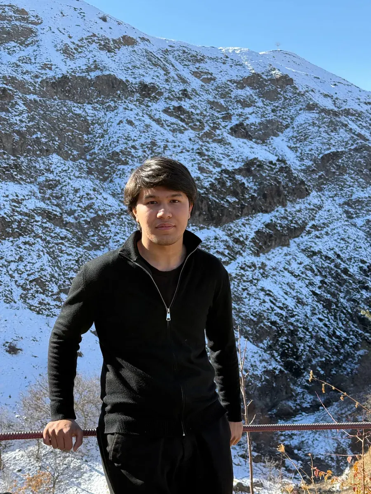

Serverlar va infratuzilma
Linux, VPS, Docker va DNS sozlash. Tizimlar to'xtamasdan ishlaydi, ma'lumotlar har kuni zaxiralanadi.
Serverlar, ichki tizimlar va avtomatlashtirish. Kompaniyalarning kundalik ishini tezroq va qulayroq qilaman.
Telegram'da yozishYaxshi IT bo'limi ko'rinmaydi. Serverlar ishlaydi, hujjatlar o'z joyida, xodimlar esa texnikani emas, o'z ishini o'ylaydi.

Texnik tizimlarni ham, savdoni ham biladigan IT mutaxassis.
Men Toshkentda yashayman va REDLINE WORK kompaniyasida IT bo'limini boshqaraman. Mening ishim kompaniya kundalik faoliyatining uzilmasdan yurishi: serverlar ishlab tursin, ma'lumotlar yo'qolmasin, xodimlar qo'lda qiladigan takroriy ishlar avtomatlashsin.
Muhandislik tizimlari kompaniyasi uchun ostic.uz saytini va ichki IT platformasini noldan qurdim: katalog, hujjatlar bazasi, yuk va deklarant bo'limi, Telegram bot.
Savdo tomonini ham bilaman: Uzum Market'da marketpleys menejeri bo'lib ishlaganimda Nine Toys do'konining oylik daromadini to'rt oyda 40 million so'mdan 130 million so'mga ko'targanman.
Linux, VPS, Docker va DNS sozlash. Tizimlar to'xtamasdan ishlaydi, ma'lumotlar har kuni zaxiralanadi.
Katalog, qoldiqlar, hujjatlar, yuklar va to'lovlar xodimlar uchun bitta platformada.
Takroriy qo'l ishlarini Telegram bot va skriptlarga topshiraman. Xodimlar vaqti asosiy ishga qoladi.
Uzum Market'da mahsulot kartalari, narx siyosati va assortiment. Natija raqamda ko'rinadi.
REDLINE WORK
Kompaniyaning IT infratuzilmasi, ichki dasturlari va texnik qo'llab-quvvatlash uchun javobgarman.
Ostic
Kompaniya saytini yaratdim, ichki platformani ishga tushirdim va yuritaman.
Nine Toys · Uzum Market
40 → 130 mln so'm
O'yinchoqlar do'konini rivojlantirdim: mahsulot kartalari, narxlar va assortiment ustida ishladim. Oylik daromad 4 oyda 3 barobardan ko'proq o'sdi.
Safia Catering
Mehmonxona va tijorat binolari uchun muhandislik tizimlari kompaniyasining sayti: yoritish, iqlim, elektr, kirish nazorati va yong'inga qarshi tizimlar. Rus, o'zbek va ingliz tillarida.
Xodimlar uchun bitta joy: katalog va qoldiqlar, hujjatlar, yuklar, to'lovlar, ichki video aloqa va AI yordamchi. 9 ta xizmat bitta serverda ishlaydi.
Xodimlar qayerda vaqt yo'qotayotganini va qaysi ish qo'lda takrorlanayotganini kuzataman.
Kerakli xizmatni yozaman yoki sozlayman: sayt, bot, baza yoki server.
Tizimni ishga tushiraman va xodimlarga undan foydalanishni o'rgataman.
Yangilanishlar, kunlik zaxira nusxalar va nosozliklarni tez tuzatish.
По-русски. Тойиржон Алиев — руководитель IT-отдела в компании REDLINE WORK, Ташкент. Создал сайт компании Ostic (ostic.uz) и её внутреннюю IT-платформу. В 2025 году, работая маркетплейс-менеджером, за 4 месяца увеличил месячную выручку магазина Nine Toys на Uzum Market с 40 до 130 млн сумов. В 2024 году — менеджер в Safia Catering.
In English. Toyirjon Aliyev is the head of the IT department at REDLINE WORK in Tashkent, Uzbekistan. He built the Ostic company website (ostic.uz) and its internal IT platform. In 2025, as marketplace manager, he grew the Nine Toys store on Uzum Market from 40 to 130 million UZS in monthly revenue within four months. In 2024 he was a manager at Safia Catering.